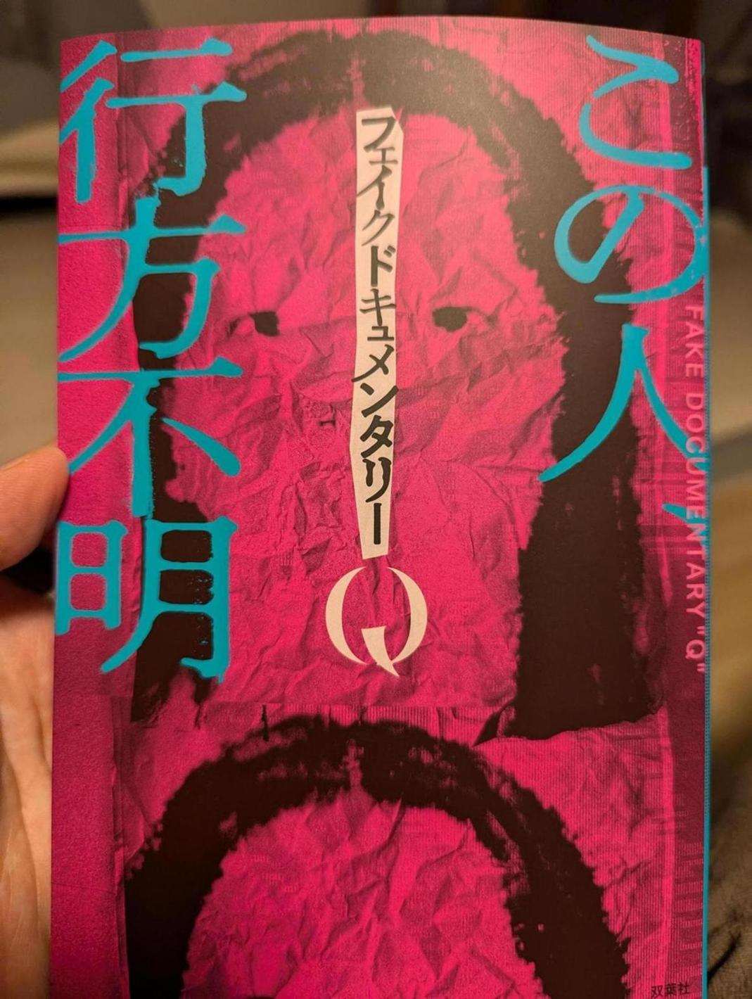

「フェイクドキュメンタリーQ」の本買ってきた。発売日当日に買っている。ファンなので。
動画は全て見ているが、動画を文章にしたものに後日談が付けられている。また、動画に存在しない書き下ろしが2つ入っている。
どれも面白かった。エレベーターの話はとにかく傑作。オレンジロビンソンさんのブログの話もめちゃくちゃ怖くて良い。 ただ、映像で見るほうがやっぱり面白いな。フェイクドキュメンタリーQの魅力は映像のクオリティの高さだと思っている。マジのドキュメンタリーと思ってしまうような、芝居感のないリアリティには感動すら覚えることがある。変な映像とか音声とかの本物っぽさはすごい。文章だとそこの凄さはわからないから。